금속재료산업기사 (2007-09-02 기출문제)
1과목: 금속재료
1. 다음 중 황동의 자연균열 방지책이 아닌 것은?
- 도료를 바른다.
- 아연도금을 한다.
- 응력제거 풀림을 한다.
- 산화물 피막을 형성시킨다.
(정답률: 63%)

2. 다음 중 초경합금의 특성을 설명한 것으로 틀린 것은?
- 고온에서 변형이 많다.
- 내마모성과 압축강도가 높다.
- 고온 경도 및 강도가 양호하다.
- 사용목적에 따라 재질의 종류 및 형상이 다양하다.
(정답률: 56%)
3. 다음 중 수소저장합금에 대한 설명으로 틀린 것은?
- 수소가스와 반응하여 금속수소화물이 된다.
- 수소의 흡장ㆍ방출을 되풀이 하는 재료는 분화하게 된다.
- 합금이 수소를 흡장할 때는 팽창하고, 방출할 때는 수축한다.
- 수소가 방출되면 금속수소화물은 원래의 수소저장합금으로 되돌아가지 않는다.
(정답률: 63%)
4. 18-8 스테인리스강에 대한 설명으로 옳은 것은?
- 크롬 8%, 니켈 18%를 함유한 스테인리스강으로 마텐자이트 조직을 갖는다.
- 텅스텐 18%, 니켈 8%를 함유한 스테인리스강으로 펄라이트 조직을 갖는다.
- 크롬 18%, 니켈 8%를 함유한 스테인리스강으로 오스테나이트 조직을 갖는다.
- 크롬 8%, 망간 18%를 함유한 스테인리스강으로 페라이트 조직을 갖는다.
(정답률: 59%)
5. 순철의 자기변태에 해당되는 것은?
- A1 변태
- A2 변태
- A3 변태
- A4 변태
(정답률: 63%)
6. 6:4 황동에 Fe, Mn, Ni, Al 등 원소를 첨가하여 선박의 프로펠러와 같은 주물이나 단조품 제조에 사용되는 고강도 황동의 특징을 설명한 것 중 틀린 것은?
- 강도를 증가시킨다.
- 방식성이 우수해진다.
- 취약해진다.
- 내해수성을 증가시킨다.
(정답률: 77%)
7. 가공을 받았던 금속을 가열하면 가공으로 변화한 성질이 가공 전의 가까운 상태로 되돌아 간다. 이 과정을 바르게 나열한 것은?
- 재결정→결정성장→회복
- 회복→재결정→결정성장
- 결정성장→재결정→회복
- 재결정→회복→결정성장
(정답률: 70%)
8. 0.2% 탄소강의 723℃ 변태선 직상에서 초석 α와 오스테나이트(γ)의 양은 약 몇 %인가? (단, α의 탄소 고용도는 0.025%이며, 공석점은 0.7%이다.)
- α=19, γ=81
- α=81, γ=19
- α=61, γ=39
- α=39, γ=61
(정답률: 49%)
9. 다음 중 형상기억 합금이 아닌 것은?
- Cu-Zn-Ni
- Cu-Zn-Al
- Nb3Sn
- Ti-Ni
(정답률: 66%)
10. 다음 중 P형, N형 반도체에 대한 설명으로 틀린 것은?
- N형 반도체에는 불순물로 As, Sb 등을 첨가한다.
- P형 반도체에 첨가하는 불순물을 억셉터하고 한다.
- N형 반도체에 첨가하는 불순물은 도너하고 한다.
- P형 반도체에는 불순물로 5가 원소를 첨가한다.
(정답률: 38%)
11. 면심입방격자(FCC)의 슬립면과 슬립방향의 조합이 옳은 것은?
- 슬립면{110}, 슬립방향＜111＞
- 슬립면{100}, 슬립방향＜110＞
- 슬립면{112}, 슬립방향＜111＞
- 슬립면{111}, 슬립방향＜110＞
(정답률: 71%)
12. 다음 중 탄소강에서 Mn의 영향으로 틀린 것은?
- 고온에서 결정립 성장을 촉진시킨다.
- 강의 담금질 효과를 증대시켜 경화능이 커진다.
- 주조성을 좋게 하며 S의 해를 감소시킨다.
- 강의 연신율은 그다지 감소시키지 않고 강도, 경도, 인성을 증대시킨다.
(정답률: 50%)
13. 다음 중 일반적으로 합금이 순금속보다 좋은 성질은?
- 가단성
- 열전도율
- 전기 전도율
- 경도 및 강도
(정답률: 79%)
14. 특수 초경 합금 중에 피복 초경 합금의 특성이 아닌 것은?
- 내마모성이 높다.
- 피삭재와 고온 반응성이 높다.
- 내크래이터(Crater)성과 내산화성이 우수하다.
- 강, 주강, 주철, 비철, 금속의 절삭에 범용으로 사용할 수 있다.
(정답률: 36%)
15. 다음 중 아연(Zn)에 대한 설명으로 틀린 것은?(오류 신고가 접수된 문제입니다. 반드시 정답과 해설을 확인하시기 바랍니다.)
- 체심입방격자를 갖는다.
- 융점은 약 420℃ 정도이다.
- 밀도는 약 7.133g/cm2 정도이다.
- 철강재료의 방식 피막용 재료로 많이 사용한다.
(정답률: 66%)
16. 소성가공된 금속을 재결정 풀림시켰을 때 최초 핵방생 장소가 아닌 것은?
- 결정입내
- 결정입계
- 쌍정의 경계
- 결정립 내의 슬립면
(정답률: 56%)
17. [보기]의 내용과 일치하는 것은?
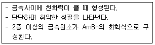
- 공정(Eutectic)
- 포정(peritectic)
- 고용체(solid solution)
- 금속간 화합물(metallic compound)
(정답률: 60%)
18. 다음 중 주철에 있어 흑연화 작용이 가장 큰 원소는?
- Ti
- Cr
- Ni
- Si
(정답률: 48%)
19. 다음 중 철광석과 그 화학식이 올바르게 연결된 것은?
- 자철광 : Fe3O4
- 능철광 : Fe2O3
- 갈철광 : FeCO3
- 적철광 : 2Fe2O3ㆍ3H2O
(정답률: 52%)
20. 7:3 황동에 1% 내외의 Sn을 첨가하여 내해수성을 향상시켜 증발기, 열교환기로 사용되는 특수황동은?
- 델타 메탈
- 니켈 황동
- 네이벌 황동
- 애드미럴티 황동
(정답률: 78%)
2과목: 금속조직
21. 용융 금속이 응고 성장할 때 불순물이 가장 많이 모이는 곳은?
- 결정입내(結晶入內)
- 결정입계(結晶粒界)
- 결정입내의 중심부(中心部)
- 결정격자내의 중심부(中心部)
(정답률: 73%)
22. [그림]과 같은 A, B 금속의 전율 고용체 합금에서 영역(Ⅱ)에서의 응축계(condensed system)의 자유도는?
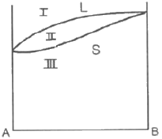
- 0
- 1
- 2
- 3
(정답률: 49%)
23. [그림]의 고용체형 상태도에서 공정점은?
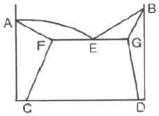
- A
- C
- D
- E
(정답률: 67%)
24. 다음 중 2차 재결정에 대한 설명으로 가장 관계가 먼 내용은?
- 2차 재결정은 반드시 핵의 생성을 수반한다.
- 1차 재결정 후 강한 집합조직이 성장하기 쉬운 방위의 결정립이 존재할 때 2차 재결정이 생긴다.
- 수소의 결정립이 다른 결정립과 합해져서 대단히 크게 성장하는 것을 2차 재결정이라 한다.
- 불순물 등으로 이동이 방해된 입계가 고온도에서 쉽게 이동할 수 있을 때 2차 재결정이 생긴다.
(정답률: 29%)
25. “격자간원자”라고도 하며 용질원자가 용매원자의 결정 격자 사이의 공간에 들어간 것을 무엇이라 하는가?
- 침입형 고용체
- 치환형 결정체
- 금속간 혼합체
- 재결합 전이체
(정답률: 57%)
26. [그림]에 사선으로 표시된 면의 밀러지수는? (단, a는 격자정수이다.)
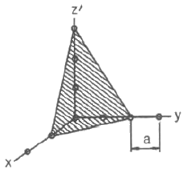
- (123)
- (236)
- (321)
- (632)
(정답률: 36%)
27. 규칙-불규칙 변태에 대한 설명으로 옳은 것은?
- 규칙도가 큰 합금은 비저항이 작고, 불규칙이 됨에 따라 비저항은 크게 된다.
- Ni3Mn과 같은 규칙상의 경우 상자성체이다.
- Ni3Fe와 같은 불규칙상은 강자성체이다.
- 일반적으로 규칙화되면서 경도는 저하된다.
(정답률: 43%)
28. 냉간가공 후 풀림시 나타나는 재결정(recrystallization)현상에 대한 설명 중 틀린 것은?
- 핵생성 및 성장과정으로 볼 수 있다.
- 새로운 결정립으로 치환되어 가는 과정이다.
- 핵생성속도가 크고 핵성장속도가 작으면 조대한 결정립이 된다.
- 재결정의 구동력은 냉간 가공시 축적된 변형 에너지이다.
(정답률: 60%)
29. 면심입방 결정(FCC)구조에서 단위격자 소속 원자수가 4개이다. 이 때의 배위수는?
- 1개
- 4개
- 7개
- 12개
(정답률: 74%)
30. Roozeboom의 3성분계농도 표시법에서 [그림]과 같은 p 조성 합금 중의 B의 조성은 어느 선분의 길이로 표시되는가?
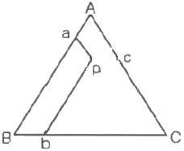
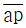
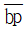
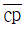
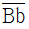
(정답률: 50%)
31. 다음 중 나사 전위에 대한 설명으로 옳은 것은?
- Burgers vector 와 평행인 경우
- Burgers vector 와 수직인 경우
- Burgers vector 와 크기가 1원자인 것
- Burgers vector 와 크기가 1원자간 보다 큰 것
(정답률: 50%)
32. 물질 중에서 원자가 열적으로 활성화되어 이동하게 되는 현상을 확산이라 하는데 이동하는 원자의 확산도에 의한 분류가 아닌 것은?
- 입계 확산
- 표면 확산
- 전위 확산
- 반응 확산
(정답률: 55%)
33. 금속 결정격자에서 {100}의 등가면은 모두 몇 개인가?
- 4
- 6
- 8
- 12
(정답률: 53%)
34. Fe 원자의 반경이 1.24Å 이라면 상온에서 순철의 격자 정수는 얼마인가?
- 0.28Å
- 0.54Å
- 2.86Å
- 5.43Å
(정답률: 36%)
35. 급냉에 의해 변태된 조직으로 다음 중 경도가 가장 높은 것은?
- Martensite
- Troostite
- Austenite
- Pearlite
(정답률: 65%)
36. 다음 중 ℇ 탄화물(fe2C)에 함유된 탄소 함유량은 얼마인가? (단, Fe의 원자량은 55.85, C의 원자량은 12이다.)
- 4.3%
- 6.67%
- 9.7%
- 11.3%
(정답률: 24%)
37. [그림]과 같이 시료의 온도 θ와 변태하지 않는 중성체의 온도 θ‘와의 온도차(θ-θ’)의 관계를 구해서 변태점을 측정하는 방법은?
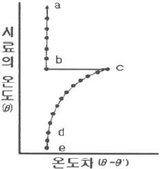
- 열분석법
- 열팽창법
- 시차열분석법
- 전기저항법
(정답률: 52%)
38. 치환형 고용체를 형성하는 인자(Hume-Rothery 법칙)를 설명한 것 중 틀린 것은?
- 용질의 원자가가 용매의 원자가보다 작을 것
- 용질원자와 용매원자의 전기저항 차가 작을 것
- 용질과 용매의 결정격자형이 같거나 비슷할 것
- 용질과 용매원자의 지름 차가 15% 이내일 것
(정답률: 49%)
39. 주강을 서냉할 때 오스테나이트안에 판상 페라이트가 생겨서 오스테나이트 격자 방향으로 일정한 길이를 가진 거칠고 큰 조직은?
- 비트만스테텐
- 레데뷰라이트
- 시멘타이트
- 오스몬다이트
(정답률: 63%)
40. 2원계 상태도에서 전율고용체일 때 경도적 측면에서 A, B 두 성분의 양이 어느 정도일 때 가장 높은가?
- 20:80
- 30:70
- 40:60
- 50:50
(정답률: 64%)
3과목: 금속열처리
41. 강을 변태점온도 이상에서 가열 유지 한 후 공냉시켜 표준조직을 만들기 위한 열처리는?
- 불림
- 담금질
- 풀림
- 뜨임
(정답률: 43%)
42. 유기용제를 적하하면 열분해에 의해 발생한 분위기 속에서 침탄하는 적하침탄법의 특징이 아닌 것은?
- 설비가 소규모이다.
- 설비유지 등이 경제적이다.
- 2종류의 액제를 사용한다.
- 한 개의 로(爐)에서 변성과 침탄을 동시에 할 수 없다.
(정답률: 60%)
43. 철강을 보호분위기나 진공 중에서 가열, 냉각하여 표면의 산화 및 탈탄을 방지하고 표면상태를 그대로 유지하는 열처리는?
- 침탄 처리
- 질화 처리
- 고주파 처리
- 광휘 처리
(정답률: 57%)
44. 열처리에 사용되는 온도계로서 저온열처리(-200~500℃)용 온도계로 가장 적당한 것은?
- 저항식 온도계
- 광고온계
- 방사온도계
- 색온도계
(정답률: 32%)
45. 고주파 경화법에서 유도 전류에 의한 발생열의 침투 깊이(d)를 구하는 식으로 옳은 것은? (단, ρ는 강재의 비저항, μ는 강재의 투자율, f는 주파수이다.)
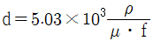
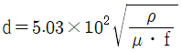
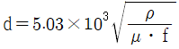
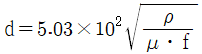
(정답률: 66%)
46. 침탄 열처리 후 마이크로 조직 시험 방법으로 측정하여 유효 경화층의 깊이가 2.2mm 인경우의 표시법은?
- CD - H - E 2.2
- CD - H - T 2.2
- CD - M - T 2.2
- CD - M - E 2.2
(정답률: 44%)
47. 고체 침탄제가 구비해야 할 조건으로 틀린 것은?
- 침탄력이 강해야 한다.
- 침탄 온도에서 가열 중 용적 감소가 커야 한다.
- 장시간 반복 사용과 고온에서 견딜 수 있는 내구력을 가져야 한다.
- 침탄 성분 중 P와 S가 적어야 하고 강 표면에 고착물이 융착되지 않아야 한다.
(정답률: 66%)
48. 열처리 후 경도 불균일 검출방법에 대한 설명으로 틀린 것은?
- 부식(50% 염산수용액)되면 흐림리 나온다.
- 제품의 여러 부분에 경도를 측정한다.
- 간편한 방법으로 줄시험이 있고, 부드러운 부분은 줄에 걸린다.
- 연삭을 하면 연한부분은 경화부에 비하여 빛깔이 밝게 보인다.
(정답률: 52%)
49. 탄소강의 경우 저온뜨임취성의 현상이 생기는 온도로 가장 적당한 것은?
- 250~400℃
- 50⑤50℃
- 600~750℃
- 800~950℃
(정답률: 64%)
50. 열처리 가열장치에서 라디안트 튜브(radiant tube)로에 대한 설명으로 옳은 것은?
- 원판상의 로상(爐床)이 일정 속도로 회전하고 열처리 품은 앞문으로부터 일정량씩 연속 장입되고 로상이 1회전 하면 열처리 온도까지 가열되는 방식이다.
- 연소용 가스버너를 내열 강관속에 붙여, 강관속에서 가스를 연소시켜 원관 표면으로부터 내는 복사열에 의해 열처리품을 가열하는 방식이다.
- 로내에 장착한 슬로트가 달린 레토르트를 회전시켜서 열처리품을 균일하게 가열하는 방식이다.
- 밀폐된 가열실에 침탄성, 질화성, 환원성 가스를 송입하여 무산화 열처리 또는 침탄, 질화처리 등 표면 경화를 하는 방식이다.
(정답률: 49%)
51. 담금질한 강의 내부응력을 제거하기 위한 열처리 방법으로 가장 옳은 것은?
- 심냉처리
- 오스포밍
- 인상담금질
- 뜨임처리
(정답률: 52%)
52. 냉각 방법 중 냉각 속도가 가장 늦은 열처리 방법은?
- 풀림
- 담금질
- 불림
- 수인 처리
(정답률: 50%)
53. 다음 강종에 대하여 담금질 온도가 가장 알맞게 연결된 것은?
- STC3 - 약 500℃
- STD61 - 약 800℃
- SKH51 - 약 1210℃
- SPS9 - 약 680℃
(정답률: 50%)
54. 다음 중 심냉처리에 따른 균열은 냉각온도가 낮으므로서 일어나기 쉽다. 그 원인으로 틀린 것은?
- 담금질 온도가 너무 높을 때
- 강재의 다듬질 정도가 깨끗할 때
- 담금질한 강재에 탈탄층이 존재할 때
- 심냉처리의 온도가 불균일하거나 정확하지 않을 때
(정답률: 63%)
55. Fe을 560℃ 이상의 고온으로 산화시키면 생성되는 산화물층의 순서로 옳은 것은?
- Fe → FeO → Fe3O4 → Fe2O3
- Fe → FeO → Fe2O3 → Fe3O4
- Fe → Fe3O4 → FeO → Fe2O3
- Fe → Fe2O3 → Fe3O4 → FeO
(정답률: 56%)
56. 구상화 처리 후 용탕상태로 방치하면 흑연구상화 효과가 없어지는 현상은?
- 플로우(flow) 현상
- 페이딩(fading) 현상
- 버닝(burning) 현상
- 번아웃(burn out) 현상
(정답률: 70%)
57. 다음 중 뜨임 균열의 방지 대책으로 틀린 것은?
- 가열을 천천히 한다.
- 잔류응력을 제거한다.
- 결정입계에 취성을 나타내는 화학성분을 증가시킨다.
- 응력이 집중되는 부분은 열처리상 알맞게 설계한다.
(정답률: 66%)
58. 구리 및 구리 합금의 열처리에 대한 설명으로 틀린 것은?
- α+β 황동을 재결정 풀림과 담금질 열처리를 한다.
- α 황동은 700~730℃ 온도에서 재결정 풀림을 한다.
- 순동은 재결정 풀림을 하고, 재결정 온도는 약 270℃다.
- 상온 가공한 황동 제품은 시기균열을 방지하기 위해 고온 풀림을 한다.
(정답률: 52%)
59. 과포화 고용체로부터 다른 상이 석출하는 현상을 이용해서 금속재료의 강도 및 그 밖의 성질을 변화시키는 처리로 두랄루민 합금의 대표적인 처리 방법은?
- 시효경화 처리
- 가공경화 처리
- 가공 열처리
- 재결정화 처리
(정답률: 75%)
60. 다음 중 잔류 오스테나이트가 증가하는 경우는?
- 냉각제가 저온일 경우
- 서브제로 처리를 하는 경우
- C% 양을 감소시켰을 경우
- Ms~Mf지점에서 서냉한 경우
(정답률: 53%)
4과목: 재료시험
61. 침투제를 표면에 적용하고 불연속 내에 침투한 침투액이 만드는 지시모양을 관찰함으로서 결함을 찾아내는 탐상법은?
- UT
- MT
- RT
- PT
(정답률: 55%)
62. 충격시험편의 제작에 대한 설명으로 틀린 것은?
- 시험편은 가공에 의한 연화나 경화의 영향이 가능한 일어나지 않도록 기계가공한다.
- 열처리한 재료의 평가를 위한 사험편은 열처리 후에 기계 가공한다.
- 시험편의 단면을 제외한 4면은 평활하지 않아도 된다.
- 시험편의 기호ㆍ번호 등은 시험에 영향을 미치지 않는 부위에 표시한다.
(정답률: 49%)
63. 다음 중 크리프시험의 목적으로 가장 옳은 것은?
- 비틀림측정
- 연신량측정
- 스트레인측정
- 마멸량측정
(정답률: 65%)
64. 원자의 격자구조를 측정하기 위하여는 주로 어떤 방법을 이용하는가?
- X선 회절법
- X선 반사법
- X선 투과법
- X선 공진법
(정답률: 55%)
65. 금속재료의 연신율을 측정할 수 있는 시험방법은?
- 인장시험
- 경도시험
- 충격시험
- 마모시험
(정답률: 62%)
66. 다음 물질들의 종파의 속도가 옳게 짝지어진 것은?
- 공기 - 약 1430m/s
- 물 - 약 330m/s
- 강 - 약 5900m/s
- 알루미늄 - 약 8350m/s
(정답률: 48%)
67. 안전보건 표지의 색채와 용도가 옳게 연결된 것은?
- 빨강 - 경고
- 파랑 - 지시
- 녹색 - 금지
- 노랑 - 안내
(정답률: 46%)
68. 설퍼 프린트(Sulphur Print) 검사 방법에 대한 설명으로 가장 관계가 먼 것은?
- S의 분포를 검출한다.
- 3%황산 수용액을 이용한다.
- 철강의 검사면에 인화지를 붙인다
- S가 많은 것에 접한 인화지는 붉은색으로 된다.
(정답률: 42%)
69. 금속재료의 조직을 금속현미경으로 관찰하고자 한다. 시험편을 만들 때의 안전 및 유의사항으로 가장 관계가 먼 것은?
- 시험편은 평활하게 유지되도록 연마한다.
- 시험편 절단 및 연마 작업시 열 영향을 받도록 한다.
- 시험편 제작시 시험편을 견고히 고정하여 튀지 않도록 한다.
- 부식액이 피부에 묻지 않도록 주의하고, 묻었을 경우 곧 바로 씻는다.
(정답률: 75%)
70. 정량 조직검사 중 결정립도 측정법에 해당하지 않는 것은?
- ASTM 결정립 측정법
- 제프리즈법
- 헤인법
- 브로즌법
(정답률: 50%)
71. 방사성 동위원소 중 Co60의 반감기로 옳은 것은?
- 약 75일
- 약 129일
- 약 5.3년
- 약 31년
(정답률: 50%)
72. 쇼어 경도시험에서 경도 값이 낮게 나오는 이유가 아닌 것은?
- 경통 내벽에 먼지 등으로 해머의 자유를 해칠 때
- 시험면과 기축이 수직으로 되어 있지 않을 때
- 해머가 낙하축에 완전히 장착되지 않을 때
- 시험기 받침대가 충분한 강성이 있을 때
(정답률: 66%)
73. 다음 중 침탄층이나 질화층 등 표면 경화층의 경도시험에 가장 적합한 시험은?(오류 신고가 접수된 문제입니다. 반드시 정답과 해설을 확인하시기 바랍니다.)
- 쇼어 경도
- 로크웰 경도
- 비커즈 경도
- 모스 경도
(정답률: 61%)
74. 압축 한계가 인장 시험의 결과와 대략 일치하므로, 보통 압축시험을 하지 않는 재료는?
- 주철
- 연강
- 베어링합금
- 콘크리트
(정답률: 49%)
75. 금속재료의 굽힘 시험을 하면 소재의 어떤 성질을 알 수 있는가?
- 유동성
- 주조성
- 전ㆍ연성
- 취성
(정답률: 67%)
76. 재료에 대한 강성계수 G를 측정하는 시험법은?
- 피로 시험
- 인장 시험
- 경도 시험
- 비틀림 시험
(정답률: 66%)
77. 시험 전의 직경 12mm, 시험 후의 직경 4mm 였을 때 단면 수축률은 약 몇 %인가?
- 11
- 25
- 69
- 89
(정답률: 21%)
78. 구리, 황동, 청동 등의 조직을 관찰하기 위한 부식액은?
- 피크린산 용액
- 염화제이철 용액
- 질산초산 용액
- 수산화나트륨 용액
(정답률: 48%)
79. 다음 중 로크웰 경도 B 스케일에 사용하는 압입자는?
- 직경 1/16인치 강구
- 직경 1/8인치 강구
- 직경 1/4인치 강구
- 직경 1/2인치 강구
(정답률: 72%)
80. 응력을 반복하여 가했을 때 재료 전체 또는 국부적 슬립변형이 생기며 시간과 더불어 점차적으로 발전해가는 현상을 응력-반복횟수로 알아보는 시험법은?
- 경도시험
- 인장시험
- 압축시험
- 피로시험
(정답률: 50%)
황동은 자연적으로 산화되어 균열이 발생할 수 있다. 따라서 황동의 자연균열 방지책으로는 도료를 바르거나 아연도금을 하는 것이 일반적이다. 또한, 황동에 응력이 가해지는 경우에는 응력제거 풀림을 해주는 것이 좋다.
하지만 "산화물 피막을 형성시킨다."는 것은 황동의 표면에 산화물을 형성시켜 균열을 방지하는 방법이다. 이 방법은 일반적으로 사용되지 않는 방법이며, 황동의 표면을 더러워 보이게 만들 수 있기 때문에 적합하지 않다.